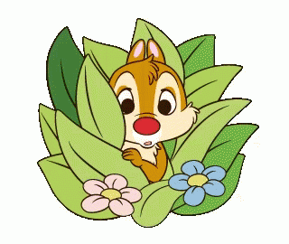
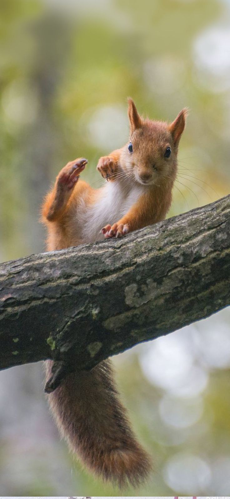
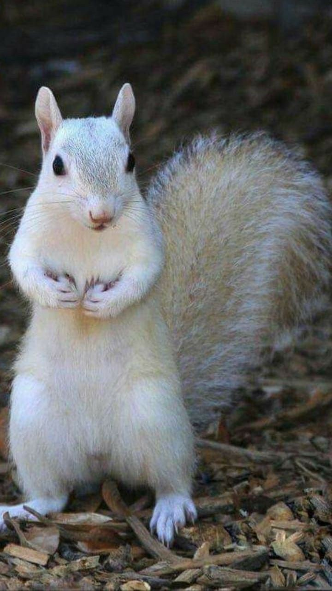
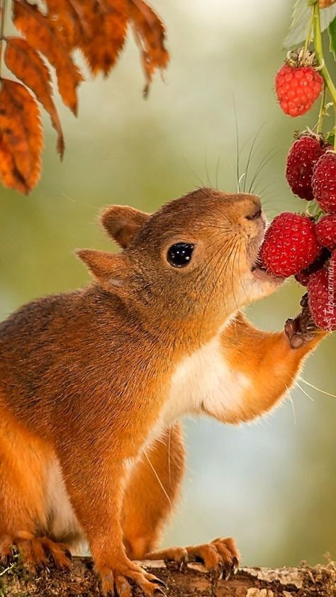
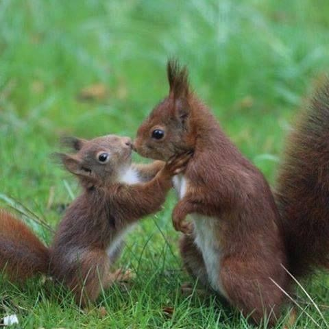
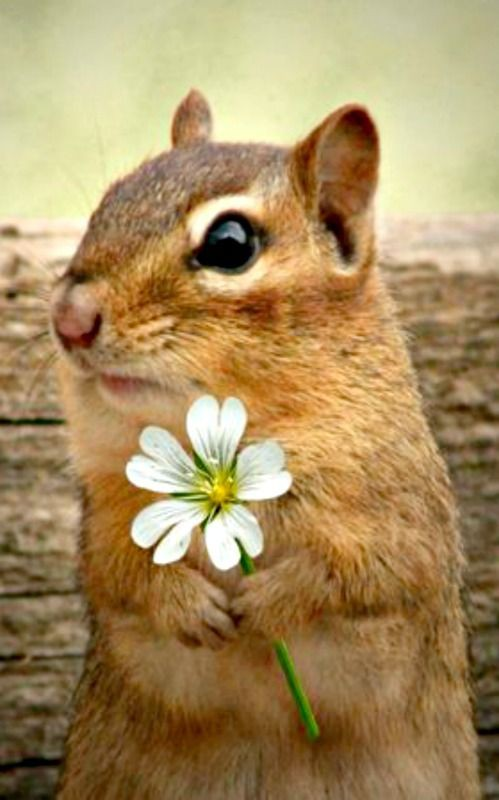
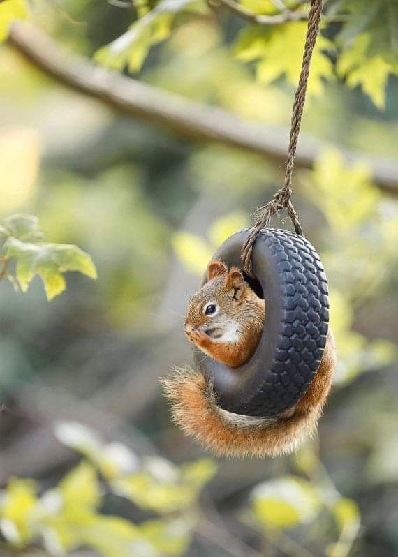
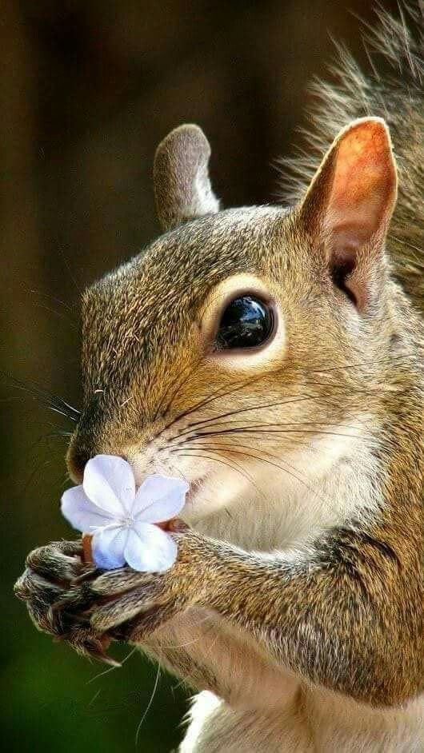
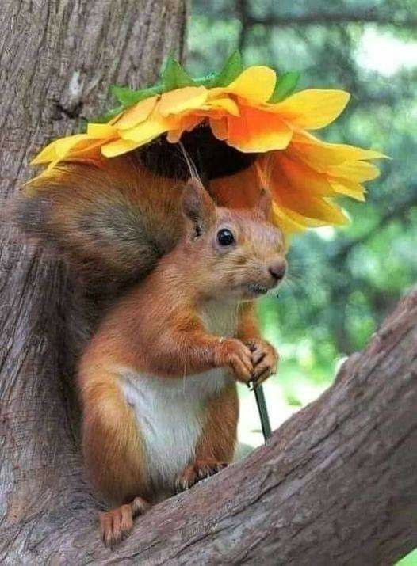
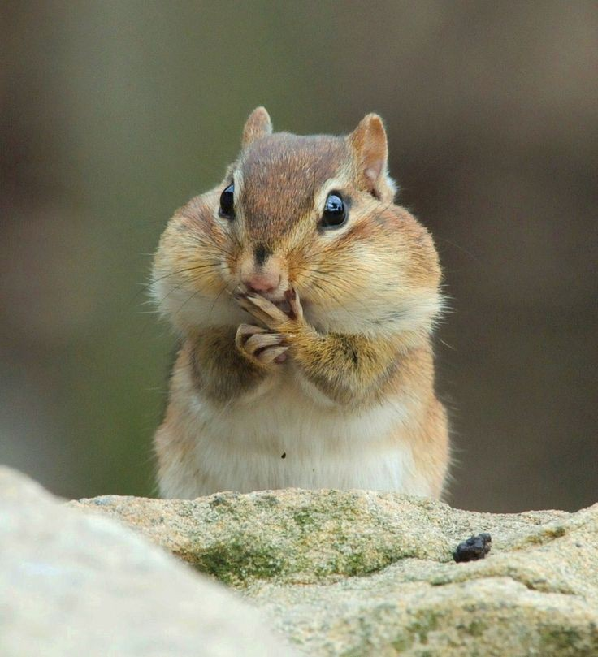

Autumn and Squirrels







Algunas ardillas de tierra hibernan💤, pero la mayoría de
las especies depende de la comida para pasar el invierno. Solo hibernan unas pocas especies.
Algunas ardillas de tierra hibernan💤, pero la mayoría de
las especies depende de la comida para pasar el invierno. Solo hibernan unas pocas especies.



Reconocen las nueces maduras usando su olfato, también pueden saber si los gorgojos han ahuecado una bellota, al reconocer que la nuez es demasiado liviana.